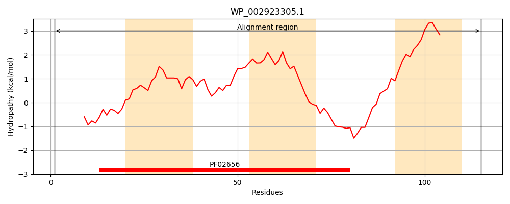
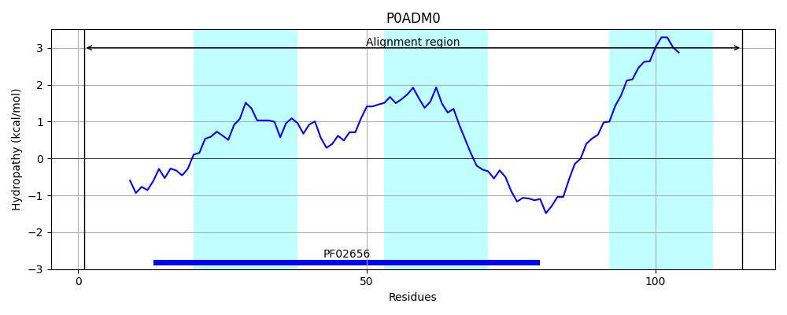
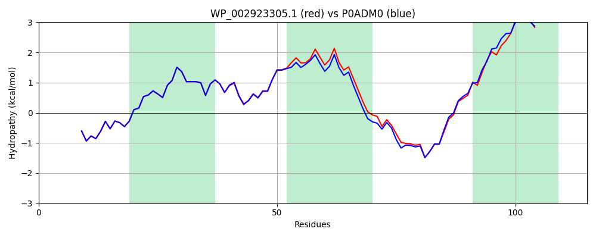

Hit Accession: P0ADM0
Hit TCID: 9.B.51.1.1
Hit Description: gnl|BL_ORD_ID|8756 gnl|TC-DB|P0ADM0|9.B.51.1.1 Inner membrane protein YidH OS=Escherichia coli (strain K12) GN=yidH PE=1 SV=1
Mach Len: 115
e:0.000000
Query TMS Count : 3
Hit TMS Count: 3
TMS-Overlap Score: 2.850000
Predicted Substrates:None
BLAST Alignment:
| Protein Hydropathy Plots: | |
|---|---|
|  |  |
Pairwise Alignment-Hydropathy Plot: | |
|  | |